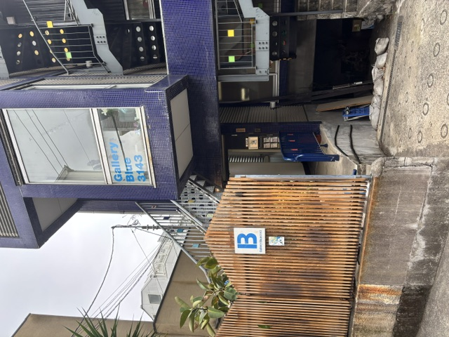
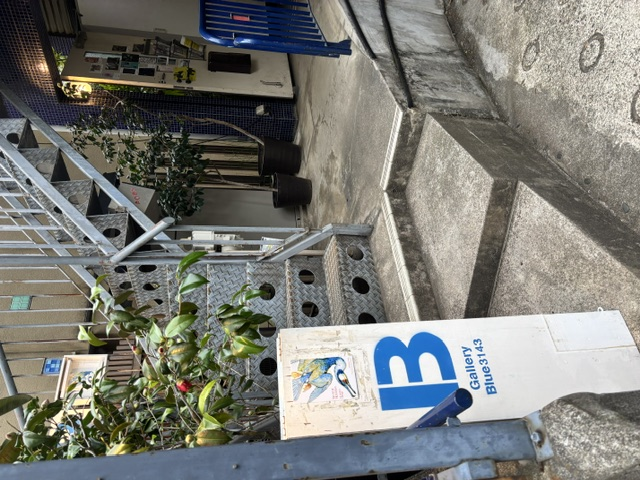
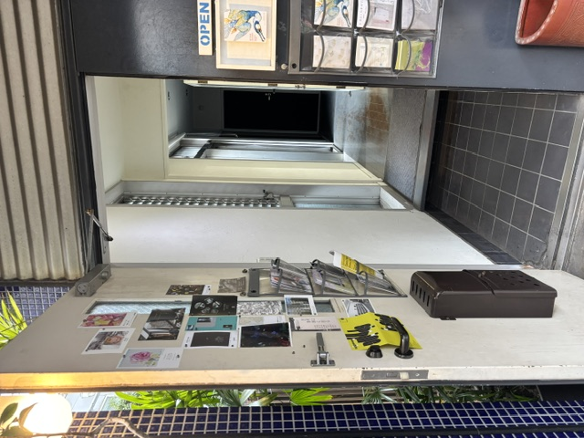
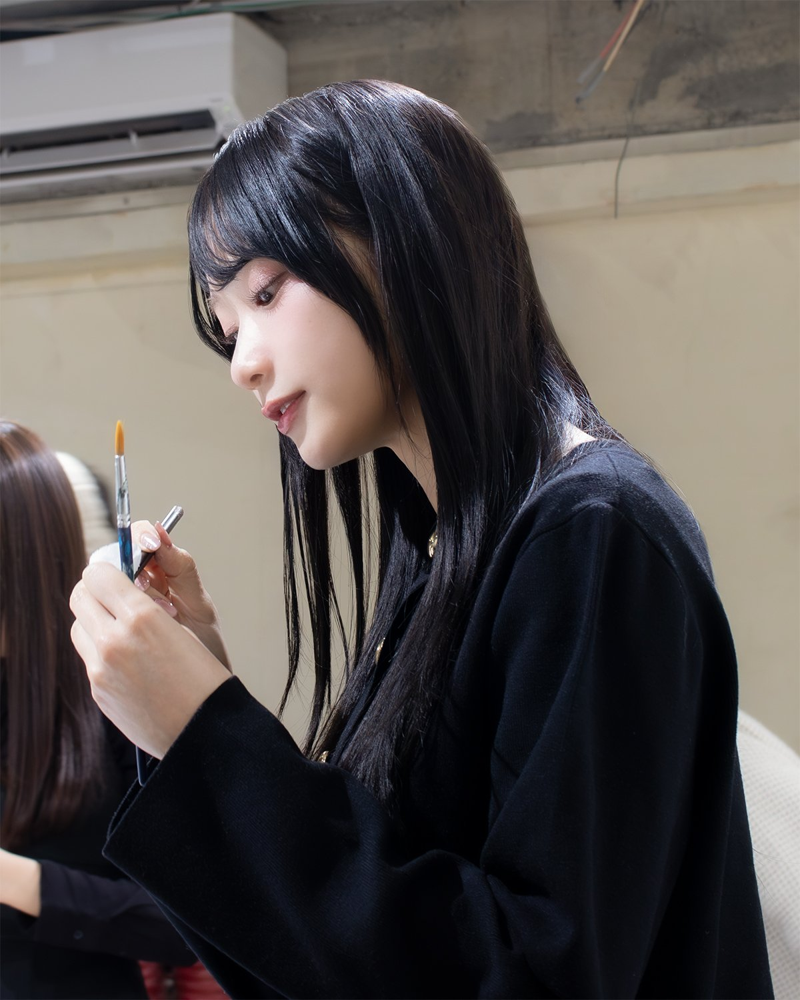

会期中、橋本真希が一枚一枚手描きしたドローイング（ラフスケッチ）を、ご来場のみなさまへ毎日抽選でプレゼントします。全66点、すべて一点ものです。ご来場時に抽選にご参加いただけ、当選された方にはその場で実物をお渡しします。詳しくはこちらをご覧ください。

橋本真希(Rain Tree) × 東京藝術大学の学生9名
2026年 8月18日(火) ― 8月28日(金)
南青山 Gallery Blue 3143 / 入場無料・予約不要
橋本真希(Rain Tree) × 東京藝術大学の学生9名
2026年 8月18日(火) ― 8月28日(金)
南青山 Gallery Blue 3143 / 入場無料・予約不要
雨の日の星空
それは、雲の先にある光を信じる ──
表現者たちの「まなざし」のこと。
アイドル・橋本真希(Rain Tree)と、東京藝術大学の学生9人。
10人の絵画と、橋本真希の朗読が織りなす、11日間の展示室です。
Statement
藝大生より — Project Statement
まなざしによって私たちは境界を越えられるのか。今回、橋本真希さんは培ってきたアイドルとしてのアイデンティティを絵画という異なる形態に昇華し、藝大生と共に1人の作家として共に制作に向き合います。また藝大生にとっては、アイドルプロデュースに代表されるファンダムという要素を意識し、SNSやマスメディアを活用したプロモーションやファン獲得の方法を、アイドルとは異なる立場から考え、向き合う機会にもなります。
この展覧会までの半年間をかけたアートプロジェクトとして、両者が問題意識を持って発見していく過程を提示します。また会場ではまなざしを題材にしたテキストからそれぞれの背負ってきた背景を明らかにすることで、物語性をメディウムとして、作家と鑑賞者の境界を横断して対話を試みます。
「アーティスト」と「アイドル」は、表現の形式も置かれている場所も違います。しかしその根にある構造は、驚くほど似ており、"ファンを獲得し、その支持の上に存在が成り立つ"という仕組みなのです。私たちは常に、「名前を売ること」「誰に、どのように届くのか」「求められるとは何か」という問いの中で表現を続けています。そこには、ひとつの正解があるわけではありません。
立場も戦略も異なる。けれど、そのどれもが"誰かに見つけられ、支えられる"というファンダムの上に成り立っていると考察できることから、この展示はアイドルと藝大生という異なる領域に立つ表現者がそれぞれのスタンスを持ち寄り、「表現とファンの関係」を可視化する意図を含んでいます。本展は表現者のまなざしとファンダムへの関わり。この二つの軸により構成されています。藝大生とアイドルという異色の組み合わせによって見えてくる新たなアートシーンをお届けします。
気軽にお越しください
服装も、滞在時間も、自由です。
5分でも、10分でも、ふらっとどうぞ。
Gallery Blue 3143



表参道駅から徒歩5分、南青山の住宅街にある
小さなアートギャラリー「Gallery Blue 3143」が会場です。
1階の奥と2階に、作品が並びます。
ギャラリーがはじめての方へ
服装・滞在時間・撮影など、
よくあるご質問にお答えします。
出展する作家
アイドル・橋本真希(Rain Tree)と、
東京藝術大学の学生9人。
同じ展示室に、それぞれの作品が並びます。
最新の対話



橋本真希：「お花と、私の好きなファッションを融合してみました」
この絵をめぐって、藝大生・あめと作家同士の対話が生まれました。
お知らせ
会期中、橋本真希が一枚一枚手描きしたドローイング（ラフスケッチ）を、ご来場のみなさまへ毎日抽選でプレゼントします。全66点、すべて一点ものです。ご来場時に抽選にご参加いただけ、当選された方にはその場で実物をお渡しします。詳しくはこちらをご覧ください。
事前に星空登録をしてくださった方へ、橋本真希からの感謝の気持ちを込めて登録順のシリアルナンバー入り「星空バッジ」をお届けします。真希本人が手描きした絵をもとにした、専用ページで見られるバッジです。バッジは『星彩』『星屑』『Meteor』の3種類。どれが届くかはお楽しみに。届いたら、ぜひ #星空バッジ をつけてどの絵柄だったかSNSで教えてください。これまでにご登録いただいた方には順次メールをお送りします。これから登録される方には、登録後すぐに自動でお届けします。星空登録はこちらから。
※ 同じメールアドレスで複数回ご登録された場合、最初のご登録のみが対象です。
公式サイトのデザインをリニューアルしました。会場の雰囲気や作家の情報をよりわかりやすくお伝えできるよう、構成を見直しています。ぜひご覧ください。
あめ(東京藝術大学)
シックな花で構成された衣装と、宙に浮いたトルソーのモチーフからアイドルとしての、橋本さんの舞台での一つの心象を読み解けるように思います。選ばれた花の配色、葉の品あるふるまいから、開演前にご自身と一つになりこれから舞台で立つ衣装と向き合うことの緊張感。袖を通すことで衣装に込められた想いと心を共鳴させる瞬間のまなざしが表れているのではないかと読み取りました。宙に浮いているトルソーの図像も、まさに今から衣装の心と対話し、理解していく瞬間そのものを表しているのではないかと考えました。ぜひ、意図をお伺いしたいです。
橋本真希より
制作時は明確な答えを用意するというより、「服と人との間にある目に見えない対話」を描きたいと思っていました。そのため、いただいた「衣装の心と対話する瞬間」という解釈はとても興味深く、むしろ私自身が作品から教えていただいたような感覚です。作品は完成した時点で鑑賞者のものでもあると思っているので、そのように受け取っていただけたことを嬉しく思います。
来場をより楽しんでいただくための「星空登録(事前エントリー)」と、抽選で10名様をご招待する「クロージングパーティー」、来場でもらえる特典の詳細を公開しました。
藝大生プロフィールページの第8弾として、みーやのページを公開しました。
田辺朔葉のページを公開しました。
基本情報
展覧会をより深く楽しむための事前エントリー。
来場や友達紹介の記録が、星(★)となって残ります。
★を集めるとクロージングパーティー(8/31昼)の抽選口数が増えます。